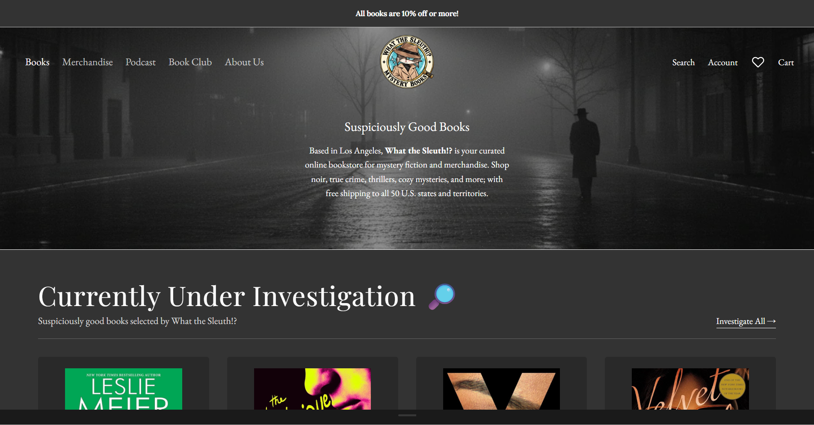

SHOPIFY • E-COMMERCE OPERATIONS • MERCHANDISING
What the Sleuth!?
An independent Los Angeles mystery bookstore built and managed across Shopify and online marketplaces.
My work includes storefront development, product and collection merchandising, catalog and inventory operations, promotional campaigns, marketplace workflows, and ongoing site improvements.
Visit live store →